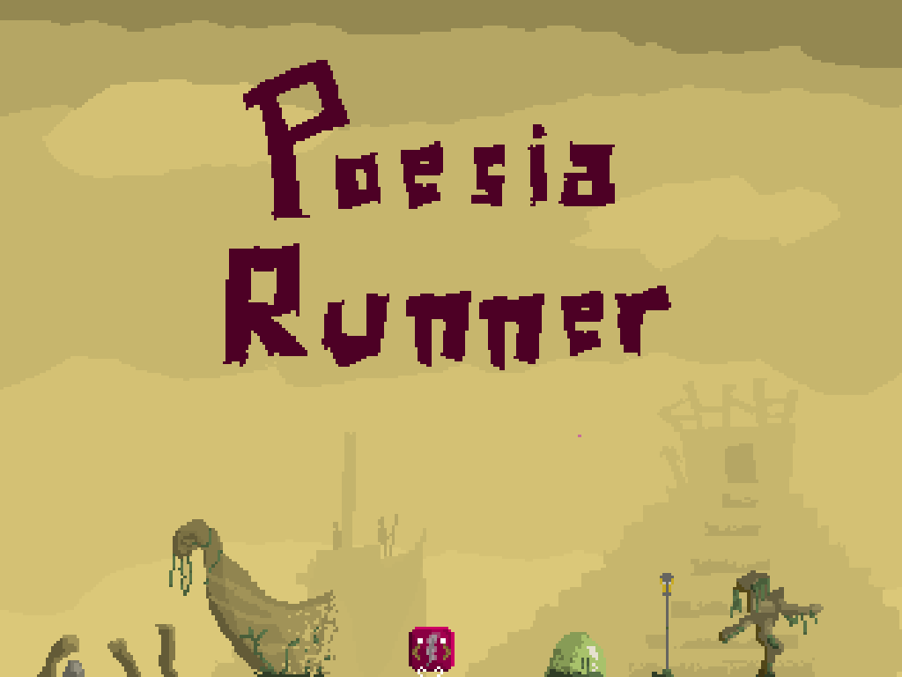
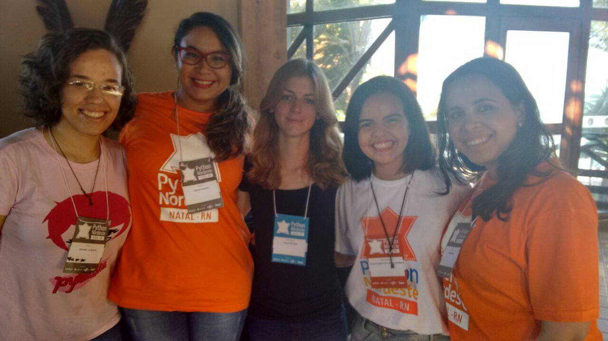
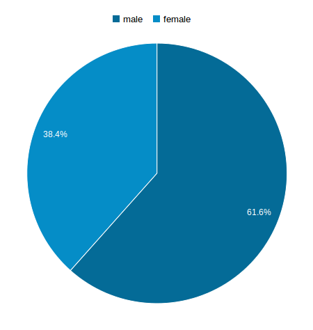
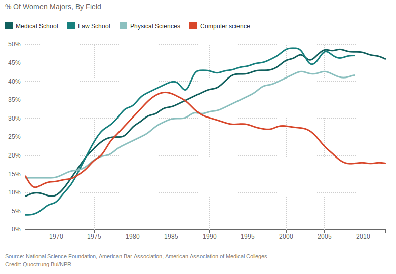
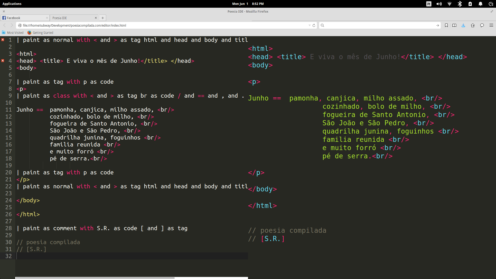

O Jogo
Por esta você não esperava! Um jogo!

Jogue aqui.
De: Dry Medeiros
| paint as normal with && and ( and ) and { as tag if as code
if (saudade && amor > orgulho) {
| paint as normal with "Vale and a and pena!" as string } and << as tag endl and cout as class
cout << "Vale a pena!" << endl;
}
De: Daniele Melo
| paint as string
<!DOCTYPE html>
| paint as white with charset as #9f9 "UTF-8" as string < and > and / and html and title and meta and head and body and pre and <b> and <i> and </b> and </i> as green
<html>
<head>
<meta charset="UTF-8">
<title>Conversando com a tempestade</title>
</head>
<body>
<pre>
Deves saber
<b> então </b>
Que cada gota de
<i> paciência </i>
Revela mares de
<i> essência </i>
De um grande
<b> coração. </b>
| paint as white
//PoesiaCompilada
| paint as green
</pre>
</body>
</html>
Uma Análise
Esse tipo de compor poesia tem qualquer coisa de ficção científica, que nos perquire e nos assombra. Fazer pensar, fazer criar, fazer ser: tudo que nos fez humanos e nos distanciou também de qualquer ideia aquém-homem, aquém-humano.
Este é um pegueno trecho da análise publicada ontem pelo poeta, professor desenhista e filósofo Felipe Garcia.
Felipe, ou F.G.M., é o autor de dois livros de poesia: Frio Forte e Cápsula.
A análise, apesar de breve, trata de aspectos profundos do manifesto e do movimento da Poesia Compilada como um todo.
Confira a análise na íntegra:
O Manifesto da Poesia Compilada – uma apreciação
As artes poéticas surpreendem pela transmutação da realidade e da palavra poética. O novo sempre vem à tona, e podemos nos deparar com um poema até mesmo diante da última tragédia da existência terrena: a extinção. Nenhum evento na história anunciará o fim do poema, pois faz parte da humanidade a criação intermitente que nos lança a si, mais longa que a vida.
Prova indubitável disso é a intervenção literária que vivenciamos em todo nosso imaginário, desde uma situação banal (uma conversa perdida) até mais complexa (a contemplação de uma eternidade fugaz). Com a palavra, o mundo foi inaugurado e, através dela, outros serão descobertos ou criados. Dessa forma, o que podemos apreciar ainda em seu período embrionário – e deveras avançado – é o poema compilado, mais uma proeza da palavra sobre o mundo.
Como representante e efígie do movimento, temos O manifesto da poesia compilada, que inaugura um estilo único, que mescla uma linguagem da informática [o virtual] com a poética [verbo-visual] para compor uma expressão i-r-real. A temática: a vida ou a matrix ou a syntax. A forma composicional: poema compilado. Como dizem os autores que assinam o manifesto, Soraya Roberta e Felipe Tavares, a poesia, nesse sentido, é um loop infinito.
Um dos pilares desse tipo de poema, a ideia de código-fonte, não é tão distante de uma tradição mística e literária, como as grandes buscas da história humana, como o segredo da imortalidade, o sentido da vida, os mistérios do Universo, a síntese de Tudo ou a tapeçaria do Nada. De repente, os neo poetas descobriram formas e maneiras de (de)formar, (re)formar, (re)configurar esse código-fonte, e expandi-lo, colocá-lo em pânico, (re)iniciando tu[na]da-do.
Na aparente simplicidade do projeto lógico-poético do manifesto, há uma filosofia do contemporâneo (a desintegração do sujeito via virtualidades e a busca de uma totalidade fragmentária), além da visão de uma sociedade hiperconectada à internet das coisas, que já não se imagina, como à época do início da era da eletricidade, sem conexão.
Estruturalmente, esse tipo de compor/e perceber poesia dialoga, também, com a tradição poética brasileira, sobretudo quando nos remetemos às construções poéticas dos poetas concretistas, do vínculo dos irmãos Campos e de Pignatari com a semiótica, a tecnologia, e com a morfologia das palavras, considerando as (re)construções e neologismos, a polissemia, os ritmos.
Semanticamente, as implicações do movimento são bastante interessantes. Incialmente, desautomatizando o utilitarismo dos programas, colocando a poesia compilada em liberdade de linguagem, os neo poetas podem liberar aquela visão humanística e inventiva que Steve Jobs tanto lutara por empreender e aplicar em seus produtos. Não se pode prever como o mercado pode absorver tal perspectiva, mas o que os move transcende esse direcionamento castrador e os transporta a desafios inomináveis.
Essa intervenção ousada da dupla aponta para questões cruciais do futuro da humanidade. Por quê? Imagino que um dos maiores desafios da ciência será criar uma autoconsciência nas máquinas, nos robôs, uma sensibilidade. O ato de criar um poema compilado poderá despertar, em uma virtualidade puramente digital, o aspecto inventivo nas máquinas, uma espécie de autoconsciência cibernética, uma volta do parafuso, o humano-máquina de Isaac Asimov será levado em conta à hora de programar e isso poderá mudar nossa relação com o mundo, a vida e tudo.
Esse tipo de compor poesia tem qualquer coisa de ficção científica, que nos perquire e nos assombra. Fazer pensar, fazer criar, fazer ser: tudo que nos fez humanos e nos distanciou também de qualquer ideia aquém-homem, aquém-humano. Já se sabe que a poesia pulou fora da página (não a abandonou), e está alcançando setores que vão além da preexistência efêmera do gênero poético. Ela não abandonou a página, pelo contrário, cada vez mais, como processo simbiótico, o poema assimilou novas linguagens e superou as barreiras enigmáticas da página para abstrair e consubstanciar, da programação, inusitadas formas de ser e de dizer.
A Literatura recebe e assimila mais uma expressão inovadora e dá espaço – cada vez mais – para linguagens diversas, meios e mecanismos concatenados de um jeito intrínseco, dialógico, levando em contas os âmbitos [compilar] e [poetar] sem sobrepô-los, mas integrando-os de tal forma que não se pode separá-los. É poesia-programação & programação-poesia. Onde houver vida, haverá poesia.
Entrevistas!
Introdução
Como vocês já puderam conferir, em nosso blog/manifesto temos a proposta não só de compartilhar poesias compiladas, mas também escrever sobre a área tecnológica, literatura e as pessoas que as constituem. Então pensamos em lançar uma série de reportagens e entrevistas.
Para começar esse ciclo, temos uma maravilhosa entrevista com...
Jessica McKellar
Nossa querida Débora Azevedo fez a tradução da entrevista com a Jessica McKellar, que fiz na Python Nordeste, em Maio.
Como a própria Jessica diz:
I am a startup founder, software engineer, and open source developer living in San Francisco, California.
Sou uma fundadora de startups, engenheira de software e desenvolvedora de código livre vivendo em São Francisco, California.

Da esquerda para a direita: Gabi, Débora, Jéssica, Soraya e Dayane. Gabi, Débora e Dayane fazem parte do PyLadies
A entrevista
Então, aí vai a entrevista, divirtam-se!
Como você teve o primeiro interesse em computação e tecnologia?
Eu não sou uma daquelas pessoas que programam desde cedo. Na verdade eu não paguei aulas de programação até eu chegar à faculdade.
Minha primeira graduação foi em Química, eu tinha vários amigos que estavam buscando graduação em Ciência da Computação e eu tava meio que vendo o que eles estavam aprendendo e vi que eles estavam aprendendo esse toolkit, cheio de ferramentas para resolver vários problemas no mundo, e isso era muito animador pra mim. Então eu paguei algumas disciplinas de Ciências da Computação na faculdade para experimentar e gostei tanto que acabei me graduando nisso. Foi assim que comecei.
Como você conseguiu 1/3 de mulheres na PyCon?
O divertido é que não foi nenhum truque de mágica, e está muito relacionado ao discussão do funil que falei na minha palestra [na Python Nordeste].
Tudo se resume ao topo do funil: ter bastante mulheres submetendo palestras. E se você tiver muitas meninas sumetendo palestras, várias serão aceitas, e assim você tem um terço de palestrantes mulheres.
Foi mais uma campanha para alcançar individualmente centenas de mulheres, as convidando para submeter palestras e auxiliando-as, oferecendo oportunidades de falar sobre tópicos de palestras juntas, revisando as aplicações. Mas a meta era só ter muitas mulheres submetendo palestras, porque elas dão boas palestras, escrevem ótimas aplicações, tão boas quanto as dos homens, é só ter mulheres o suficiente submetendo. Algumas serão aceitas e outras não, mas o topo do funilestava tão forte, tantas mulheres submeteram aplicações, que você acaba com muitas no“fundo do funil”, muitas que são aceitas.z
É literalmente mandar email para milhares de mulheres, encorajando elas a submeterem algo, é isso.
Como é a sua rotina de trabalho?
Agora eu sou mais uma gerente, passo mais o tempo gerenciando outras pessoas. Eu lidero um grupo de engenheiros no Dropbox que é responsável por desenvolver o cliente desktop do Dropbox, que é feito em Python, e também nossos apps mobile e o site, e isso toma todo o meu tempo.
Você tem alguma mensagem para as meninas que estão começando agora no Ensino Médio ou na Universidade?
Ciência da Computação e programação são tão úteis em tantos domínios que é um grande investimento para qualquer pessoa, nunca é tarde demais pra começar a programar e qualquer pessoa pode fazer isso. E mesmo que você se sinta meio sozinha na sua sala, se você é a única menina, tudo bem, porque vale muito a pena esse investimento em aprender uma habilidade que está com uma demanda tão grande e é tão relevante para tantas áreas diferentes.
Outra coisa que eu quero dizer é que quando você aprende programação, muda o modo como você pensa sobre o mundo, porque você percebe que você pode mudalo. Você pode fazer software que faz o mundo melhor, e isso muda o jeito que você pensa sobre o que é possível. E isso é algo muito empoderador pra se ter na mente e eu quero que todos experimentem disso, por isso é importante pra mim que todos tenham pelo menos a oportunidade que tive.
Até a próxima!
EUAlização
Ontem, no dia 26 de junho de 2015, o casamento gay foi declarado legal! E devido a essa declaração sem precedentes, uma onda de avatares coloridos surgiu nas redes sociais, juntamente com fervorosos comentários comemorando a vitória.
O fato ocorreu na Suprema Corte dos EUA, onde uma votação que terminou em 5x4 determinou a liberdade no sexo do casamento. É uma vitória não apenas para algumas espero-que-apenas-hoje-minorias envolvidas diretamente, mas para todos os humanos, pois é uma vitória para a igualdade entre os indivíduos.
Seria um cenário perfeito, se não fosse por um detalhe (cujo argumento tem alguns problemas). Em 2013, o casamento gay foi legalizado no Brasil. E quando isso ocorreu, numa realidade muito mais próxima de nós que a dos EUA, não houve uma manifestação tão grande.
Não vimos mudança de avatares. Não vimos uma enxurrada de posts sobre o assunto invadindo nossas timelines. Não foi um evento importante.
Será que o centro do nosso mundo não está sob nossos próprios pés? Talvez não, e de fato é isso o que parece acontecer quando observamos esses pequenos fatos (não apenas este em específico, mas muitos outros).
Mas... Qual seria o problema? Talvez não seja tão mal observarmos o mundo sob os olhos de outros... Agirmos sob os olhos de outros... Poderia não haver nenhum problema se não fosse o simples fato que vivemos em uma realidade um pouco diferente.
Isso deveria nos preocupar pois quando vamos falar mal, a primeira realidade que vem a mente é a nossa, não a dos EUA, por exemplo. Por isso, devemos (além de comemorar vitórias como essas) começar também a entender que não só de EUA se vive no Brasil.
Isso dito, é claro que não podemos esquecer que hoje será sempre um dia importante para a humanidade!
| paint as normal with Viva as red o as orange casa as yellow mento as green gay as blue ! as cyan
Viva o casamento gay!
Problemas com a argumentação
- talvez se o uso das redes sociais fosse mais difundido em 2013...
- talvez as pessoas tenham mudado, e se 2013 fosse 2015...
- talvez o governo dos EUA se preocupe mais em divulgar decisões...
- talvez a imprensa brasileira estivesse preocupada com outros acontecimentos mais importantes...
- talvez...
Quer discutir mais o assunto? Deseja adicionar algum fato? Contra-argumentar? Comente!
E Daí Se Sou Mulher e Programo?
| paint as code with // as tag ; as normal & as class S.R as tag [ and ] as string
// E daí se sou mulher & programo?;
passo o batom vermelho;
nos lábios;
o negro lápis;
nos olhos;
pego uma caneca de café;
ligo meu notebook;
checo meus;
emails;
aprendo mais uma linguagem;
& vou;
compilando;
sonhos;
em linhas;
que;
bra;
das;
um pedaço da mudança;
para o mundo;
ah! só mais um comentário;
// E daí se sou mulher & programo?;
//[S.R]
Título Moderno
| paint as white with // as tag [ and ] as string because and for as code S.R. as tag
//Título Moderno
//O poeta come amendoin
| paint as white with // as tag [ and ] as string because and do and for as code S.R. as tag
ao som do
//Hino Nacional
ao passo que
escuta sua
//Canção de exílio
because
enquanto
//A arte de amar
não for a sua
//Canção de Regresso à Pátria
exortar o
//madrigal melancólico
não deixará de sua
reza diária.
// [S.R.]
// Poesia compilada
Um poema e uma ideia
O poema
Para começar, um poema.
| paint as comment
// Women
| paint as normal with = as tag
society = we
| paint as normal with . as tag ( and ) and dress and smile and walk and be and exec as code LIKE_WOMAN as constant woman and society as class
society.exec (
woman.dress(LIKE_WOMAN)
woman.smile(LIKE_WOMAN)
woman.walk(LIKE_WOMAN)
woman.be(LIKE_WOMAN)
| paint as normal with -> as tag TECH as constant woman as class remove_from( and ) as code
woman->remove_from(TECH)
)
| paint as orange with Error as code < and > as tag
Error <7:1>: woman is not an object
Error <7:13>: LIKE_WOMAN is not a macro
Error <12:8>: remove_from is not a valid method for woman
| paint as red
General Society Fault!
| paint as normal with this as code . as tag "FOLT" as string
this.from("FOLT")
Tips para interpretação
General Protection Fault: Erro causado quando um programa acessa a memória de algum outro. Causava tela azul no Windows.
Macro: (da linguagem de programação C) é uma predefinição, construída antes do programa ser compilado.
. e ->: em C e C++, . é usado para fazer referências em um objeto, e -> em um ponteiro.
A ideia
A ideia de escrever este post surgiu quando eu estava verificando os acessos do blog, e vi o seguinte gráfico:

Eu admito que esperava uma diferença bem maior, e de fato fui pego de surpresa quando percebi que a quantidade de acessos ao blog é aproximadamente de
- 2/5 - Mulheres
- 3/5 - Homens
Há um lado bom e um lado ruim nestas proporções. O lado bom é que apesar do nosso site ser mais tech, a diferença não é tão gritante. O lado ruim é que ainda há uma diferença, e essa diferença ainda pode ser percebida facilmente.
Um dos fatos que faz com que eu dê tanta importância a essa diferença entre quantidade de homens e mulheres, principalmente na nossa área, é o seguinte gráfico:

A linha vermelha representa a percentagem de mulheres cursando na área de ciência da computação ao longo dos anos. Como se pode ver, essa percentagem tem decrescido de forma significativa desde 1984.
Se a quantidade de mulheres que fazem um curso de ciência da computação tem decrescido desta forma, é um bom sinal que tenhamos apenas aproximadamente 12% de diferença entre acessos por homens e acessos por mulheres no nosso blog. Mas a meta de atingir igualmente ambos os gêneros continua sendo de grande importância.
Toda esta questão revolve ao redor de um único ponto: na nossa sociedade, a computação é tradicionalmente uma área masculina. Enquanto vários outros setores vem se tornando cada vez mais equilibrados, continuamos tendo grandes problemas para conseguir esta igualdade na nossa área.
E para finalizar, uma frase da Karen Spärck Jones:
"Computing is too important to be left to men."
"A computação é importante demais para ser deixada aos homens."
Amor Compilado
| paint as normal with for as tag amor as class { and } as code ( and ) as code "" as string print as tag
for de tudo; meu amor; serei atento {
print ("");
}
| paint as normal with if as tag sem and ver as code amor as class arde and fogo as string
amor = fogo
if sem ver(amor):
amor.arde()
| paint as normal with eu and br as code < and > and / as tag
<eu te amo>
para começar a<br>
<amar-te>
</eu>
Iterações
| paint as normal with float and while and continue as tag eu and amor as code 1 as constant
float eu, amor;
while (eu + amor != 1)
continue;
Trecho
| paint as code with // and , and ! and ; and . and : as tag # as white [ and ] as string
//Trecho
Conceição de Azevedo,
Terra do amor!
Teu passado fulgente
Assegura teu valor!
O teu solo e tua gente
Bem refletem sob o sol;
Vida e grandeza!
Salve Jardim do Seridó.
#Letra:Eurico Guilherme Caldas
#Poesiacompilada
#[S.R.]
De: Álvaro Tavares
| paint as blue
De tudo ao compilador serei atento
| paint as red
antes, e com tal linkeditor
| paint as green
E sempre, e num loop
| paint as yellow
Que mesmo em face da melhor biblioteca
| paint as orange
Dele se encante mais sua sintaxe
| let felipe be cyan
| paint as felipe
Quero vivê-lo em cada vã função
Prayer to Python
| paint as code with # and . and ~ as tag [ and ] as string
#Prayer to Python
Programmed serpent
tell me how to
compile my dreams
In a few
Bro
ken
lines
let me taste
your poison
And see if
It really has
Antidote.
#[S.R. ~ D.A.]
#Compiled Poetry
Tecnologia & Planos
Aposto que tem muita gente curiosa para saber como tudo isso funciona: o site, o blog... as cores! Vou tentar responder a estas perguntas, se eu deixar alguma dúvida, vai no twitter e pergunta lá!
Poetry.js
poetry.js é uma pequena biblioteca escrita em Javascript que permite adicionar cores com facilidade a páginas web.
Tudo começou quando Soraya procurou alguma solução que permitisse um pouco mais de liberdade na hora de colorir suas Poesias Compiladas, que suportasse caracteres acentuados e que produzisse um resultado de qualidade. Não parecia haver nada parecido disponível.
Nós procuramos criar algo que permitisse um pouco mais de liberdade artística, e daí surgiu a biblioteca & linguagem poetry.js!
O Site
Quando Soraya me falou da ideia de colocar um site no ar contendo todas as ideias das Poesias Compiladas, fui contagiado de imediato! Afinal, para quem gosta de poesia e código, nada soa melhor que isso.
Gostamos de trabalhar diretamente com HTML e CSS e portanto comecei a experimentar com algumas ideias de imediato. Apliquei um pouco de cores e gostei do resultado.
Acredito que o tempo entre Soraya aprovar o layout e o site entrar no ar foi menos de quatro horas! A paixão por passar a ideia adiante quebrou barreiras e aqui estamos nós!
O Blog
Queríamos algo simples para este blog, algo que passasse a ideia de feito sob medida, que inspirasse! Descartamos rapidamente as soluções de blogging dinâmico e partimos para as estáticas.
Ao final, escolhemos uma solução própria, escrita totalmente em C++, o bake. E se você está lendo este post, quer dizer que funciona!
Com o bake escrevemos nossos posts em markdown, e a partir disso todo o HTML é gerado previamente, reduzindo o processamento do servidor ao enviar os arquivos para vocês!
Futuro
Muito mais ainda está por vir! Um screenshot vindo do futuro para dar água na boca:

Escrevendo poesia compilada no navegador!
Viva o mês de Junho!
| paint as normal with < and > as tag html and head and body and title and br as code / as tag
<html>
<head> <title> E viva o mês de Junho! </title> </head>
<body>
| paint as tag with p as code
<p>
| paint as class with < and > as tag br as code / and == and , and . as tag
Junho == pamonha, canjica, milho assado, <br/>
cozinhado, bolo de milho, <br/>
fogueira de Santo Antonio, <br/>
São João e São Pedro, <br/>
quadrilha junina, foguinhos <br/>
familia reunida <br/>
e muito forró <br/>
pé de serra.<br/>
| paint as tag with p as code
</p>
| paint as normal with < and > as tag html and head and body and title and br as code / as tag
</body>
</html>
| paint as comment with S.R. as code [ and ] as tag
// poesia compilada
// [S.R.]
Post Um
Bem vindos ao nosso blog! Poesia compilada, por ser um movimento, não se trata apenas de um site estático... e o movimento que precisamos virá deste blog.
Aqui postaremos dos mais diversos assuntos, mas uma coisa é certa: poesias não faltarão!
Também lhes digo que assuntos interessantes estarão sempre em pauta e vale a pena vir dar uma olhadinha aqui de vez em quando!